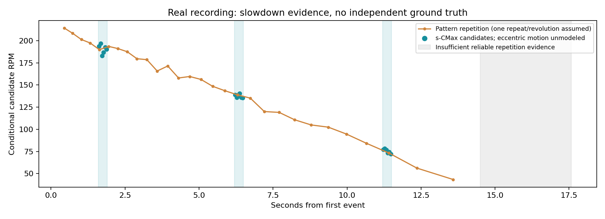

DVSLume-G1 · 真实录制 · Mac离线分析
手动圆盘上的球：旋转逐渐减慢
三段RAW及官方解码数据已经保存、校验完成。下方是未经独立真值标定的候选转速；球心偏移与遮挡使三维轴仍不可靠。
完整报告 · 保存清单与SHA256 · 数据质量 · 周期对照

已保存的三段录像
| 文件尾号 | 时长 | 结论 |
|---|
| 221544.raw | 22.65s | 留档：强背景/光照干扰，约7–8秒整体画面位置变化 |
| 221756.raw | 35.69s | 补充：减速可见，但仍有偏心摆动 |
| 222403.raw | 17.58s | 主分析：较清晰，时长适中，已选三个短片段 |
1.6–1.9秒
s-CMax候选 191.5 RPM · 周期候选 191.2 RPM
ROI±2像素敏感性：173.4–193.7 RPM（不是置信区间）。动画为实际事件，0.25倍速。
完整诊断JSON · 逐窗CSV
6.2–6.5秒
s-CMax候选 137.5 RPM · 周期候选 138.4 RPM
ROI±2像素敏感性：132.3–145.9 RPM（不是置信区间）。动画为实际事件，0.25倍速。
完整诊断JSON · 逐窗CSV
11.2–11.5秒
s-CMax候选 75.5 RPM · 周期候选 74.1 RPM
ROI±2像素敏感性：72.2–81.5 RPM（不是置信区间）。动画为实际事件，0.25倍速。
完整诊断JSON · 逐窗CSV
14.5秒后缺少足够重复证据，没有把事件减少解释成已测得0 RPM。所有时间从首事件197754251微秒开始。